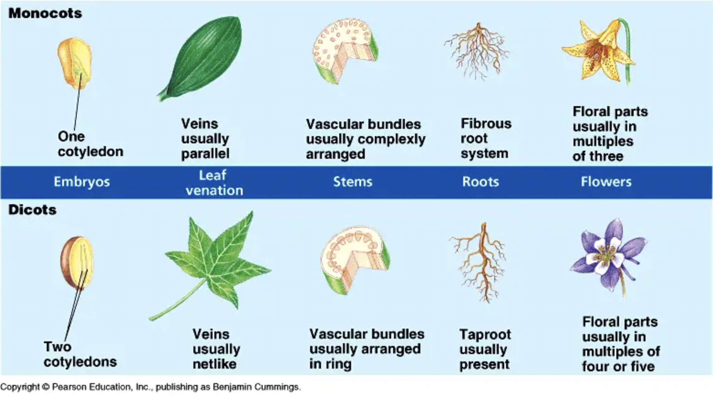

Bryophytes (Non-vascular Plants)
- Include mosses, liverworts, and hornworts.
- Lack true vascular tissues (xylem and phloem).
- Small in size and typically found in moist environments.
- Dominant gametophyte generation (the main plant body is haploid).
- Water is essential for fertilization (motile sperm).
- Examples: Funaria (moss), Marchantia (liverwort).
Pteridophytes (Vascular Seedless Plants)
- Include ferns, horsetails, and whisk ferns.
- Possess true vascular tissues (xylem and phloem).
- Have true roots, stems, and leaves.
- Dominant sporophyte generation (the main plant body is diploid).
- Reproduce via spores produced in sporangia.
- Water is still required for fertilization.
- Examples: Dryopteris (fern), Equisetum (horsetail).
Gymnosperms (Vascular Seed Plants - Naked Seeds)
- Include conifers (pines, firs, spruces), cycads, ginkgoes, and gnetophytes.
- Possess well-developed vascular tissues.
- Produce seeds that are not enclosed within a fruit ("naked seeds").
- Pollination occurs directly by wind (anemophily).
- Dominant sporophyte generation.
- Examples: Pinus (pine), Cycas.
Angiosperms (Vascular Seed Plants - Flowering Plants)
- The most diverse and dominant group of plants.
- Possess well-developed vascular tissues.
- Produce flowers, which are the reproductive structures.
- Seeds are enclosed within fruits, which develop from the ovary.
- Double fertilization is a unique characteristic (one sperm fertilizes the egg to form the zygote, and another sperm fuses with the polar nuclei in the central cell to form the endosperm - food supply for seed).
- Pollination can occur by wind, water, insects, birds, and other animals.
- Dominant sporophyte generation.
- Performs alternation of generations - featuring a diploid sporophyte generation and haploid gametophyte generation - alternating between the two generations in a cyclical manner.
- Divided into two main classes:
- Dicotyledonae (Dicots): Two cotyledons (seed leaves), net-like venation in leaves, taproot system, floral parts usually in multiples of four or five. Examples: Hibiscus, Mango, Bean.
- Monocotyledonae (Monocots): One cotyledon, parallel venation in leaves, fibrous root system, floral parts usually in multiples of three. Examples: Rice, Wheat, Maize, Lily.l. 
Important Terms to Know:
- Vascular tissue: Xylem (transports water and minerals) and phloem (transports food).
- Spores: Haploid reproductive cells that can develop into a new organism without fertilization.
- Seeds: Mature ovules containing an embryo and stored food, enclosed by a protective coat.
- Fruit: Mature ovary containing seeds.
- Cotyledon: An embryonic leaf in seed-bearing plants, one or more of which are the first leaves to appear from a germinating seed.
- Pollination: Transfer of pollen grains from the anther to the stigma.
- Fertilization: Fusion of the male and female gametes.
- Gametophyte: Haploid generation in the plant life cycle that produces gametes.
- Sporophyte: Diploid generation in the plant life cycle that produces spores.
- Alternation of Generations: The life cycle of plants that involves both haploid and diploid multicellular stages.

Written by Kasiban Parthipan